You may have noticed that there is no Wire icon. This is because Proteus is intelligent enough to detect automatically when you want to place a wire. This avoids the tedium of having to select a wire-placement mode.
To connect a wire between two objects:
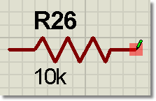
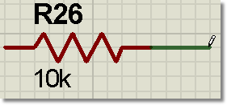
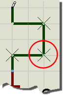
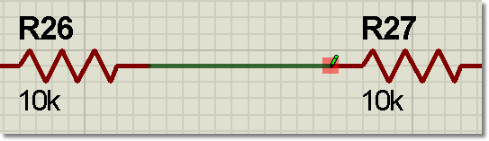
A connection point can connect to precisely one wire. For components and terminals there is a connection point at the end of each pin. A dot has four connection points at its centre so that four wires can be joined at a junction dot.
Since it is common to wish to connect to existing wires, Proteus also treats wires as continuous connection points. Furthermore, as such a junction invariably means that 3 wires are meeting at a point it also places a dot for you. This completely avoids ambiguities that could otherwise arise from missing dots.
See Also
It is often convenient to place a component against a wire or the pin of another component/terminal in order to make a connection. Proteus supports this method of connection as shown in the following examples.
If you place a component pin end directly against a wire it will be considered connected to the wire and a junction dot will be created. The component can then be moved and a wire will automatically be placed
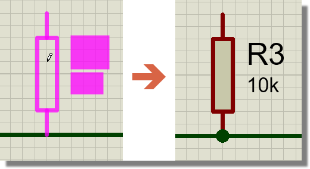
If you place a component such that a pin end on the component is directly against another component pin end or a terminal end on the schematic it will be connected to that component or terminal.
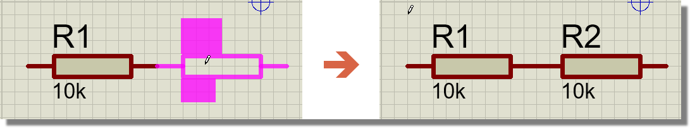
If you place a passive component (e.g. res, cap) in the middle of a wire it will insert into the wire connection and both pins of the component will be connected.
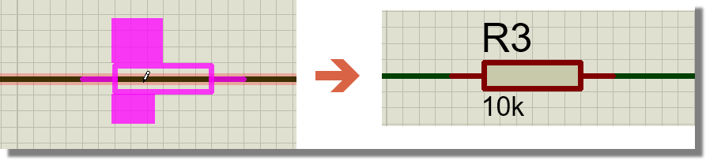
If you place a component on the schematic and then separately drag it onto a wire it will not connect. No junction dot is created. The part must be placed directly on to the wire in order to make a connection.
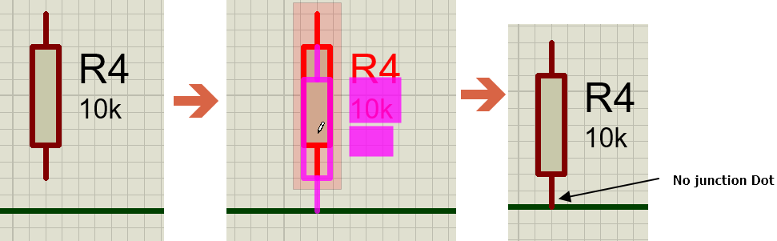
You can connect a component to a junction dot by placing it or dragging the pin end on to a junction dot.
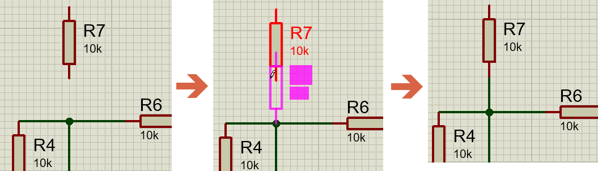
If you place a component onto the schematic and then separately drag the component such that a pin touches the end of a component pin or a terminal pin it will form a connection.
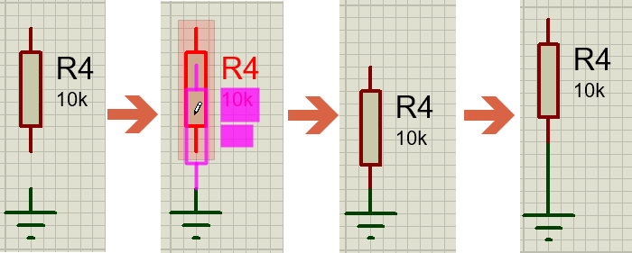
If you copy and paste a component and position the paste onto a wire, it will not connect It has the same rule as dragging an already placed component on to a wire.
If you paste a component or a terminal on to another pin end or terminal it will create a connection
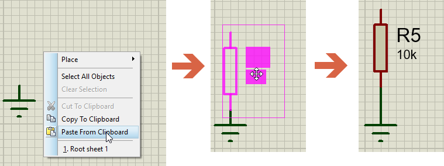
The following basic rules of thumb may be helpful:
The wire autorouter provides an intelligent aid to quickly placing wires on the schematic. After starting wire placement the wire router will follow the path of the mouse towards the terminal point, making orthogonal adjustments as required. For longer, more complex routes you should periodically click left to 'anchor' or commit the previously routed segment (this gives you far more control over the routing process by allowing you to interact with the auto-router and direct it as required).
The WAR can be completely disabled by holding down the CTRL key during route entry. This is useful if you want to route a diagonal wire directly between two connection points.
Suppose you have to connect the data bus of an 8 bit ROM to the main data bus on the circuit diagram and that you have placed the ROM, bus and bus entries as shown below.
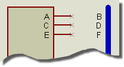
Repeat wiring
You would first click left at A, then B to place a horizontal wire between them. By clicking twice at C, you will invoke the Wire Repeat function which will then place a wire between C and D. Clicking left twice on E will join E and F and so forth.
Wire Repeat copies exactly the way the previous wire was routed. If the previous wire was automatically routed then the repeated wire will also be automatically routed. On the other hand, if the previous wire was manually routed then its exact route will be offset and used for the new wire.
Although wires follow the general scheme of tag then drag, there are various special techniques that you can apply to them. In particular:
It is also possible to move a wire segment, or a group of wire segments using block move techniques.
To move a wire segment or group of segments:
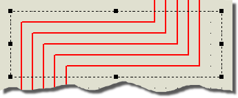
Moving a group of wires
A further technique provides a quick way of altering wiring topology, perhaps eliminating unwanted kinks in wires where they have been routed around an object which has since been moved.
To edit a wires topology after routing :
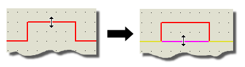
Removing kinks in a wire